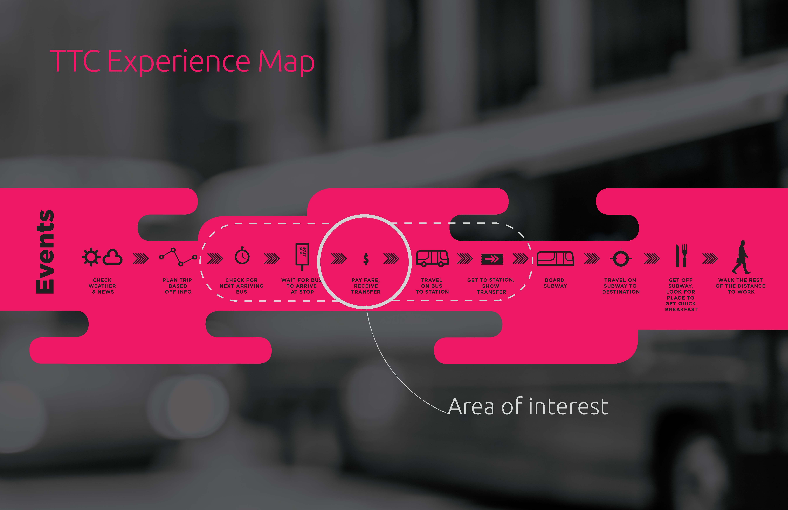
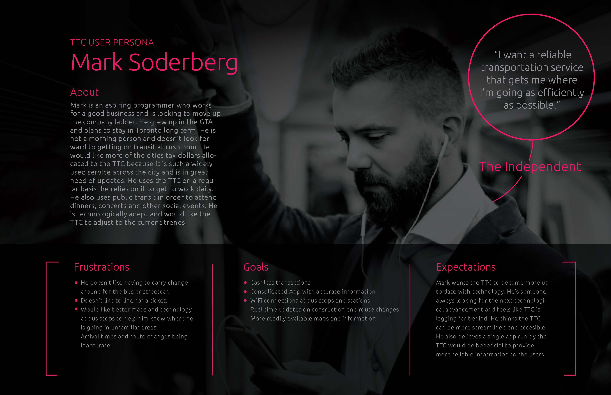
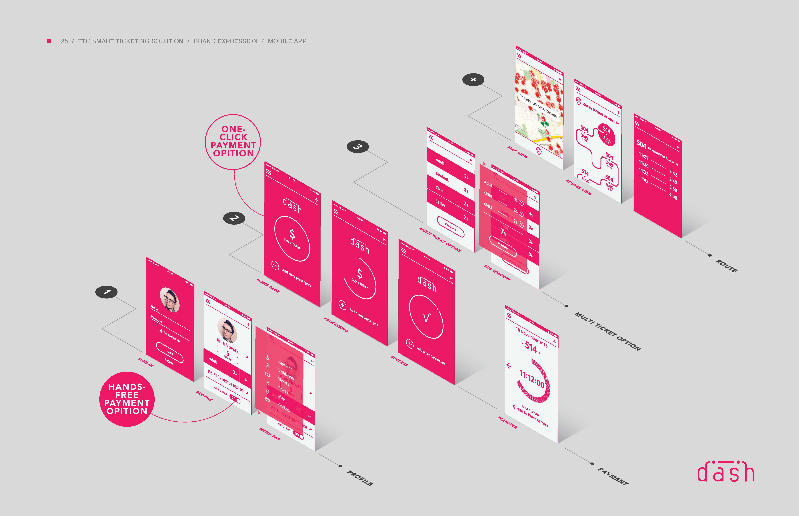

Projects from my time at George Brown College (2015-2018) and early career work
PUSH is a fitness tech company that provides actionable data for elite coaches.
PUSH is a wearable accelerometer designed to be used in top level athletics. The wearable device is accompanied by both a mobile and desktop application that can keep track of all the data collected by the device. PUSH helps coaches quantify their athlete's outputs and stores that data for them in order to help plan and adjust future workouts.
I am the UX / Product Designer at PUSH designing for both the mobile and desktop applications. My involvement would start with user stories and creating the UX flow, from there I would create wireframes and review with the development team. After the wireframes were fleshed out, I would move to the prototyping and user testing phase. After a layout is established I would move to the high fidelity design and prepare all files for our developers. I also worked on marketing, graphic design, video editing and website development for the company.
Video and animation produced by me.
PUSH is designed around the velocity based training (VBT) philosophy. The device measures the speed at which you can lift the barbell or perform the exercise and that number tells the coach how difficult that workout is. This helps coaches see improvements, manage injuries as well as motivate athletes.

PUSH is targeting a niche market so there is a lot of opportunity to take over the whole market and become to number one provider for fitness tech in the space. As a designer I was always pushing to make the most usable and intuitive product in order to retain our users and push the envelope on what was possible with our product. Throughout my time at PUSH usage numbers as well as sales were consistently beating last years numbers. We spent a lot of time discussing specific use cases and issues with our users in order to cater to their experience, this provided us with a lot of insight into the strength and conditioning world.
One of the main challenges that I had to deal with as a designer was keeping our products as intuitive as possible. A lot of coaches that we dealt with were not very technically efficient so we could not assume any functionality was obvious to the user. On top of this a lot of the athletes using the product don't experiment with it beforehand and are using it for the first time in the gym. The athlete is trying to get through their workout as quickly as possible so any barriers can quickly become an annoyance. When I was watching a full team do a complete workout while using the band it made me fully comprehend what the athletes were going through while using our product. This changed my design thinking going forward and made me prioritize a free flowing experience that tried to reduce any stoppages from the athletes.


Working at PUSH has been a great experience to understand how a startup company works. With my time here I've had to design for pretty much every aspect of the company, which has taught me a lot about being a designer. I've learned a lot about process and found a have found a new appreciation for seeing an idea come to fruition. Working very closely with the development team has taught me a lot about collaboration and compromise. My other biggest takeaway is the importance of consistency. In the past when I've worked on shorter term projects, consistency was obvious and never seemed to be a huge issue. Working on multiple products and over a long period of time has challenged me work on my organizational skills as well as documentation. Working on the design system was a huge project and made me realize all that goes into staying consistent within a large company and the challenges you face when developing new features.
The mox ring is a concept done for a wearable device that could replace your wallet. It would have an associated mobile app that could log all the information such as credit card, metro pass, drivers license and make them all readily available in one convenient ring. Go from buying breakfast to the subway without ever having to move a finger.

We created this timeline based on the main industrial components that make up the city. It shows these industries from the past, present, and what might come in the future. This helped us assess what area in the city of experiences we wanted to focus our attention on.
We thought of three possible concepts to explore improvements in the city of experiences. We chose three different industries to focus our attention on, Waste Management, Energy Production and Emergency Services.


- Security & Privacy when dealing with peoples personal information
- Implementation and usability, how do we get people to use our product?
- How do we make our product more useful/efficient than the technology people already own?
I was the UX/UI designer on this project in a group of 5. I worked with the group to further develop the concept and create the initial wireframes and mockups. I was also involved in the fabrication of the prototype and user testing the product.
This graphic is able to quickly show the key components of the ring and what its purpose and functions are. I also included a mockup of the loading screen and potential prototype to make a stronger visual.


This was the user persona developed for this concept based on some basic human factors research and surveys. Building the user persona enabled us to gain more perspective on what was important to include in the product and what was unnecessary. This also helped us develop a more cohesive marketing strategy that we could take when needed.

These were the mobile app screens developed to encompass all the necessary tools to use the ring. This includes a sign in page, home page, new card setup, history and settings. All of these designs were made using sketch. Mobile application design is an area where I am greatly interested in and would like to pursue further.

Our group developed a working prototype and constructed the infrastructure associated with the ring.


This was an extremely rewarding project from concept to execution. Creating multiple concepts and exploring the design space in each of them was really fun. The most difficult part of this project was creating the prototypes to test the proof of concept. Having people interact with our product was a lot of fun and gave us more ideas to iterate on this design.
A new way to move through a cities transit system seamlessly without ever having to worry about change or tokens. This app allows you to board transit directly through your phone. Includes proof of purchase, transfer access points and route settings. Uses NFC technology to increase speed and efficiency.
How can we change the overall experience of a city.
The experience of a city is very broad so we first decided on narrowing our scope. Since the public transit system greatly impacts a person's perception of a city we decided to focus our attention there. We wanted to create a universal tool that could help modernize and improve service in cities across the world.
I was the UX designer in a team of 3, researching and prototyping an application that could be implemented in the transit system. I worked on user research, personas, wireframing, prototyping and the visual design.
- Implementing an application on such a broad scale.
- Making a system that conforms to a large demographic
- Understanding what users needs and expectations are from a cities transit system.
- Creating a seamless experience so that we establish returning users.
Our first step in the research phase was to understand how the user currently flows through the system. Based off of this we wanted to focus in one one particular interaction that was a pain point. This is an experience map we created in order to visualize the users current experience.
Our next step in the research process was trying to understand our main users. We sent out surveys to get a better understanding of who would be interested in using a transit payment application and what their expectations would be. After gathering this data we put together this persona.
- Users can quickly move throughout the transit system seamlessly
- Increase the perception of the city by improving on the existing transit system.
- Economic gain when more tourists become attracted to the city.
Based off our collected research and testing, I designed these initial wireframes. I wanted to make the app simple and focus on its primary purpose, payment. There are other peripheral functions but the main homescreen and focus of the app is on paying for your trip and receiving your transfer.

These pages show how the user flows through the system as well as all the benefits for commuters and the city. We wanted to create a more seamless experience for users as well as provide an incentive for the city. Making our project feasible and appealing to the city was a priority in this project. Giving the city valuable information about who's riding what transit and when helps the city allocate its resources appropriately.


This is the screens designed for the mobile app. I took on a large role in determining how the app would be tranched and which screens were our highest priority. As well as determining related extra features that could be put into the app without burdening the users cognitive capacity. Our design offers simplicity and ease of use which was our goal when considering our demographic.

It was difficult to design a platform that had to account for so many variables. When dealing with complex systems such as transit you have to consider all of the possible consequences and issues that might arise. On top of that the demographic is so large that you have to consider who is using this application and why. Overall this was a great learning experience as we worked together on creating the concept, solving problems and ultimately creating a final product we were proud of.
The sci fi chess set was an experiment to create a unique product using 3D modelling software. I decided on creating a humans vs aliens style chess set based on 1950's style sci fi movies. I made 12 original pieces that take the same role as traditional chess pieces.

For the alien side I wanted to use a chrome theme because it conveys the sense of an advanced industrialization. For the human side I wanted to use a matte colour with some bright highlights which was prevalent in the 1950's style.


I wanted to make the pieces of both sides comparable in functionality. The queen represents the species that is at war. The pawns are the ships sent out to be on the frontline. The rooks are designed to be spacestations that the species take refuge in or use to travel. The bishops and knights are designed to be tools that are used by the species to fight. Finally, the king is the planet that each species is trying to take control of.


Making this chess set really opened my eyes to the potential of 3D modelling. I was able to use UV mapping for both planets, getting a realistic imprint of the earth on my chess piece. I learned how to take advantage of different textures and materials to get the result I wanted. I had fun modelling these pieces and gained great insights into the world of 3D modelling.